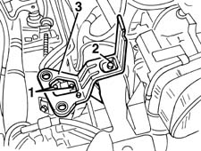
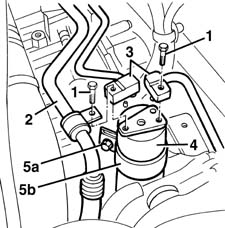
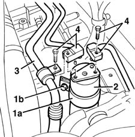
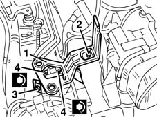

5040A44 air conditioner dehydrating filter/accumulator - r+r
- Path
- Procedures > 50 AUXILIARY UNITS > 5040 AIR CONDITIONING CASING AND COMPONENTS > 5040A air conditioner coolant circuit > 5040A44 air conditioner dehydrating filter/accumulator - r+r
- Kind
- repair procedure (removal / refitting; the operation number is the code)
- Applies to
- all engines; all production periods
- Interactive page
- https://sloeber94.github.io/elrnDB-fMltpl/en/#/2891808
Applies to: all engines; all production periods
Applies to: all engines; all production periods
 Removing
Removing
 Refitting
RefittingDrain the coolant fluid (refer to op. 5040A10 Air conditioning refrigerant CIRCUIT - Draining and Refilling ).
5530B52 Battery DRIP TRAY/SUPPORT - R.R.
1048A10 AIR CLEANER FILTERING ELEMENT - REPLACE
1. Loosen the bolts fixing the pipe connectors.
2. Undo the bolts and the nuts fixing the air filter bracket.
3. Remove the bracket.

Applies to: all engines; all production periods
1. Undo the bolts fixing the pipe connectors.
2. Move the pipe.
3. Disconnect the connectors from the filter.
4. Recover the drier filter and mounting.
5. If necessary, undo the nut (5a), open the retaining collar (5b) and extract the filter from the mounting.

Applies to: all engines; all production periods
Refitting
RemovingCheck that the drier filter is intact and there are no signs of damage.
Follow these precautions.
1. If removed, reposition the drier filter in the mounting and fix it using the retaining collar (1a), without tightening the nut (1b).
2. Position the drier filter and mounting.
3. Position the pipe.
4. Connect the pipe connectors without tightening the fixing bolts.

Applies to: all engines; all production periods
1. Position the air filter bracket.
2. Tighten the bolts and the nuts fixing the bracket.
3. Tighten the collar nut.
4. Tighten the bolts fixing the connectors to the recommended torque.
 | Fastening | Component | Ø | Value (daNm) |
|---|---|---|---|---|
4 | Bolt | COOLANT SYSTEM FITTINGS | M6 | 0.9 |

Applies to: all engines; all production periods
Topics linked from this page (5)
- 1048A10 AIR CLEANER FILTERING ELEMENT - REPLACE
- 5040A air conditioner coolant circuit
- 5040A10 Air conditioning refrigerant CIRCUIT - Draining and Refilling
- 5530B10 battery - r+r
- 5530B52 Battery DRIP TRAY/SUPPORT - R.R.